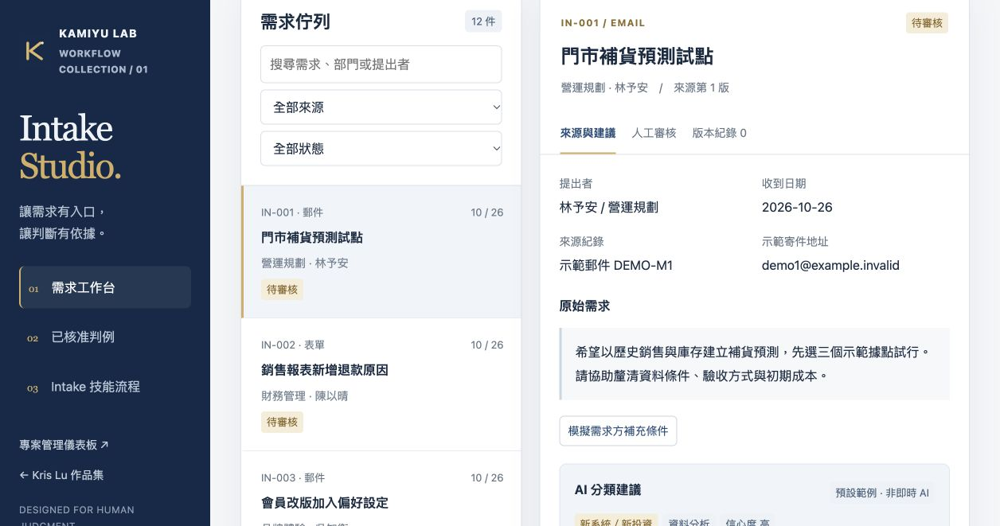
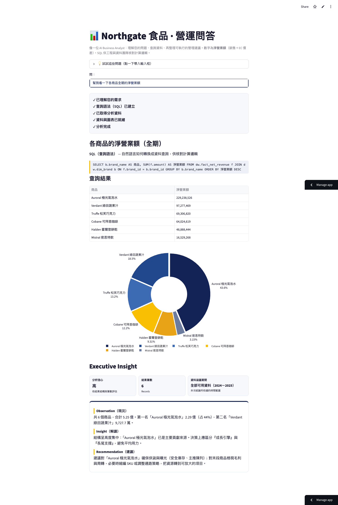
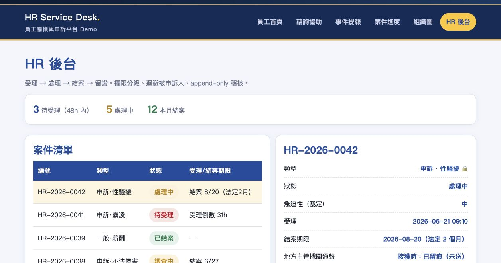
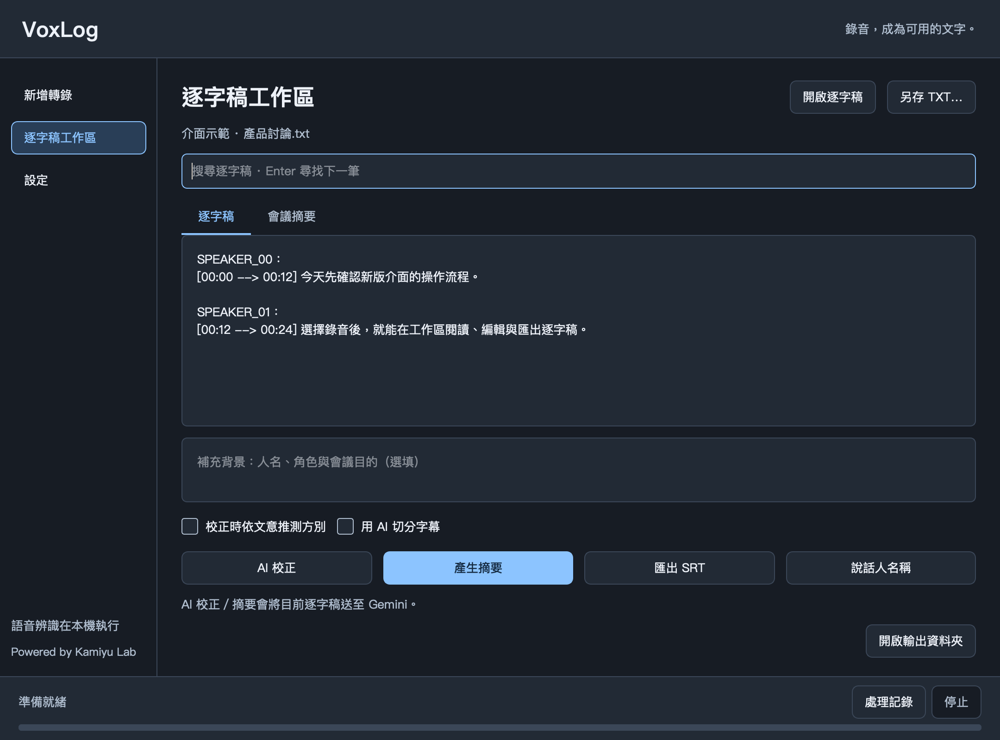

建立管理可見度
整合分散的專案紀錄，建立 PMO 儀表板與週報呈現，把工程任務轉成主管可追蹤的進度、Owner、風險與下一步。
PMO 治理 · 管理儀表板 · 決策追蹤
ENTERPRISE EXPERIENCE / 駐點經驗
從管理方向到現場需求，
釐清責任、相依關係與下一個決策。
2026.08 — 至今 / 全職駐點
以外部顧問團隊成員身分，每週五天駐點，直接與 Group CIO、財務及 IT 團隊協作，將管理方向、營運需求與現場問題整理成可執行的工作。
整合分散的專案紀錄，建立 PMO 儀表板與週報呈現，把工程任務轉成主管可追蹤的進度、Owner、風險與下一步。
PMO 治理 · 管理儀表板 · 決策追蹤
規劃需求入口與來源證據留存，設計 AI 輔助分類、信心度與人工覆核機制；同時評估財務等部門的 AI 應用情境。
Demand Intake · AI 流程設計 · 人工覆核
AI 輔助判讀仍在測試，最終判定由人員負責。協調 TMS、WMS／SAP 等工作，釐清 IT、物流、財務與外部廠商的需求、相依關係與責任範圍，持續追蹤待決事項。
企業系統協作 · 供應商管理 · 執行追蹤
以上呈現個人參與範圍；企業內部資料、專案畫面與未公開營運細節不作展示。
APPROACH / 治理與執行
將需求、建議與決策接起來，
讓團隊知道依據、責任與下一步。
整理來源、範圍與相依關係，辨識缺漏與待確認事項，讓需求評估有共同依據。
看需求治理的設計取捨保留來源證據，分清事實與建議，讓人員有依據地採用、修改或退回 AI 的判讀。
看 AI 輔助與人工審核界線讓進度、風險、負責人與待決事項出現在同一個管理視角，再追蹤處理方案與執行結果。
看專案管理的設計取捨SELECTED WORK / 精選案例與作品
先看需求治理與風險追蹤，再探索 AI 與流程工具。
每項作品都保留實際畫面、操作入口與參與範圍。

開啟展示 ↗需求進入評估前，先釐清來源、缺漏與責任。以 Skill 與審核工作台展示 AI 建議如何交回人員判斷。
我的角色：需求治理、技能規則、人工審核流程與 AI 協作實作。
公開 Demo 使用虛構資料與預寫 AI 建議，不連接正式企業系統。
 開啟展示 ↗
開啟展示 ↗
讓主管看見哪些進度需要介入、由誰處理，以及下一步如何追蹤。公開情境展示異常回報到決策與執行的往返。
我的角色：管理需求定義、資料視角設計、儀表板建置與持續迭代。
公開 Demo 使用虛構資料，不連接正式企業系統。

開啟展示 ↗
操作 HR 系統 ↗
認識工具 →從錄音到可編輯的逐字稿，接上 AI 校正、會議摘要與字幕匯出。
我的角色：工具規劃、AI 協作開發、桌面工作區與流程整合。
需安裝的桌面工具；雲端 AI 功能會傳送文字至所選服務。
MORE TO EXPLORE
兩項皆為互動原型；規劃 Emily Ko · 建置 Kamiyu Lab。閱讀人才畫像案例 →
LEADERSHIP / 管理背景
Transformation leader
with technical fluency
六年以上專案、產品與人員管理經驗。我的工作，是讓團隊對齊問題、做出選擇，並把方案帶到交付。
從建立團隊到分析工作落地。
過往人員管理與跨角色協作經驗。
從 NLP 語音產品、資料分析到企業系統交付，我擅長把業務、工程與管理者的語言，轉成共同的問題定義、具體方案與交付節點。
AI coding、Python 與 API 是我的原型工具：讓團隊提早看見可行方案、驗證假設，再決定如何投入與推進。
LET’S CONNECT
開放交流企業 AI 導入、數位轉型管理、PMO 治理與跨部門交付的職涯機會。